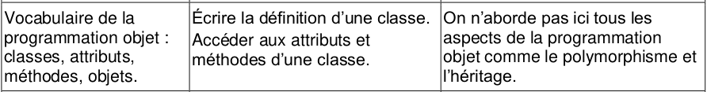
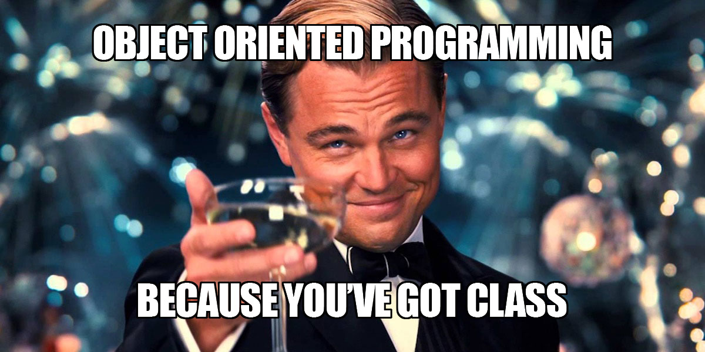
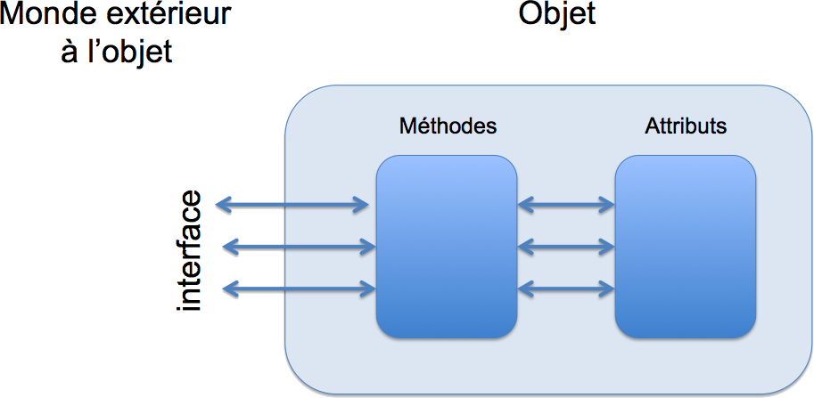
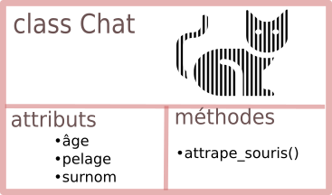
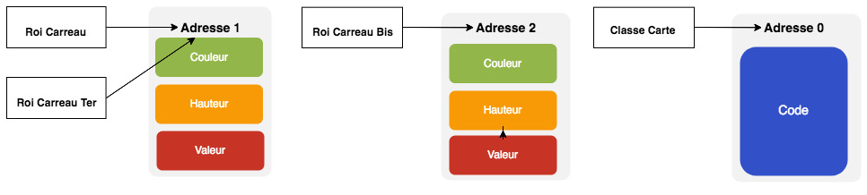
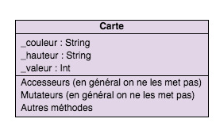
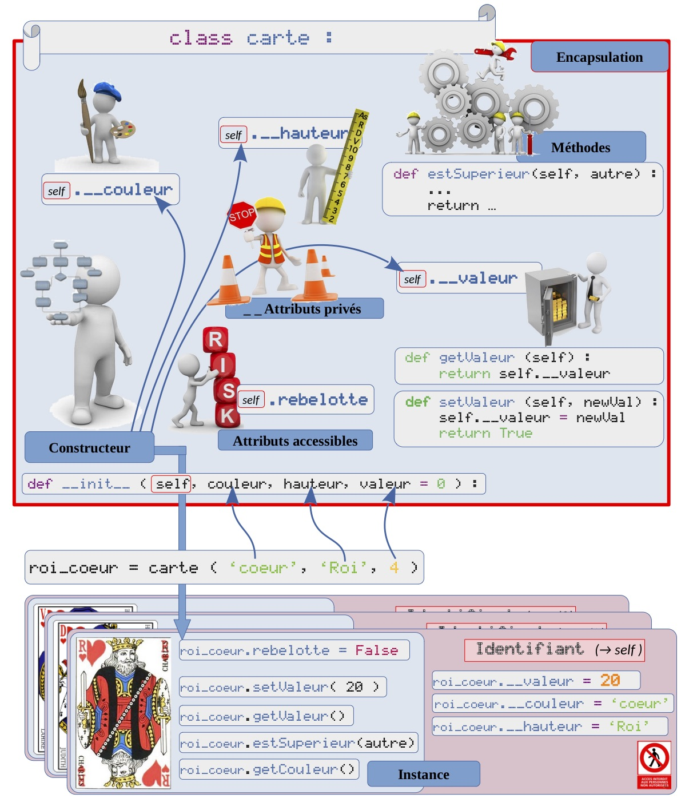
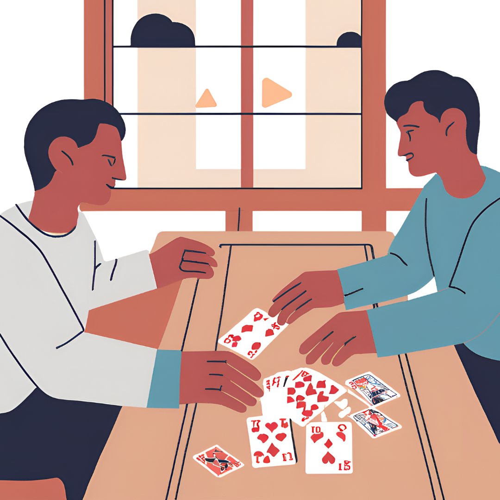

Programmation Orientée Objet⚓︎

Source
Groupe de travail NSI (Chatel P., Chouteau J., Teilhaud F., Gambazza W., Buonocore E., Connan G., Mandon F., Lecomte A., Bignin S., Sarnette F.) Licence CC BY NC SA

1. Introduction à la programmation objet⚓︎
La programmation objet correspond à une manière peut-être plus naturelle pour les humains, de concevoir le fonctionnement d'un programme.
En ce moment où vous lisez le notebook, plusieurs "objets" sont en action. Un écran qui affiche le notebook ; des yeux qui reçoivent la lumière ; une première partie du cerveau, le cortex visuel, qui transforme cette lumière en images ; et enfin une deuxième partie du cerveau, le cortex cérébral, qui transforme cette image en pensée. La communication se fait ici à sens unique, de l'écran vers la pensée.
Dans un deuxième temps, vous allez répondre aux questions posées plus loin. Il y aura interaction dans les deux sens, en rajoutant un autre objet, le clavier.
On est donc en présence d'objets ayant à la fois des caractéritiques, et des actions, qui leurs sont propres. Le clavier a comme caractéristiques ses touches, la manière dont il est connecté à l'ordinateur. Et ses actions peuvent être de communication vers l'ordinateur : envoyer le code d'une touche ; ou bien en provenance de l'ordinateur : configuration en azerty ou qwerty. Remarquez que l'objet clavier est ici défini de manière générale, on ne précise pas sa marque, son agencement de touches etc. De la même manière que l'on dit "j'ai pris la voiture" et non pas "j'ai pris la 2CV orange de 1964".
Retour sur des usages masqués de la classe de 1ère :
Comme M.Jourdain faisait de la prose sans le savoir, vous avez déjà utilisé l'an passé la programmation objet.
Regardons par exemple comment est programmée la fonction randint de la bibliothèque random :
import random
import inspect
print(inspect.getsource(random.randint))
def randint(self, a, b):
"""Return random integer in range [a, b], including both end points.
"""
return self.randrange(a, b+1)
Excepté la présence d'un self surprenant (randint n'ayant besoin que de 2 paramètres a et b), rien de nouveau, on voit la définition d'une fonction très courte...
Inspectons maintenant tout le code de la bibliothèque random, on constate la présence de mots-clés comme class, une fonction __init__ et si vous chercher bien on y retrouve la fonction randint... mais inclue dans la définition de la classe
classe random
print(inspect.getsource(random))
"""Random variable generators.
integers
--------
uniform within range
sequences
---------
pick random element
pick random sample
pick weighted random sample
generate random permutation
distributions on the real line:
------------------------------
uniform
triangular
normal (Gaussian)
lognormal
negative exponential
gamma
beta
pareto
Weibull
distributions on the circle (angles 0 to 2pi)
---------------------------------------------
circular uniform
von Mises
General notes on the underlying Mersenne Twister core generator:
* The period is 2**19937-1.
* It is one of the most extensively tested generators in existence.
* The random() method is implemented in C, executes in a single Python step,
and is, therefore, threadsafe.
"""
from warnings import warn as _warn
from math import log as _log, exp as _exp, pi as _pi, e as _e, ceil as _ceil
from math import sqrt as _sqrt, acos as _acos, cos as _cos, sin as _sin
from os import urandom as _urandom
from _collections_abc import Set as _Set, Sequence as _Sequence
from itertools import accumulate as _accumulate, repeat as _repeat
from bisect import bisect as _bisect
import os as _os
try:
# hashlib is pretty heavy to load, try lean internal module first
from _sha512 import sha512 as _sha512
except ImportError:
# fallback to official implementation
from hashlib import sha512 as _sha512
__all__ = ["Random","seed","random","uniform","randint","choice","sample",
"randrange","shuffle","normalvariate","lognormvariate",
"expovariate","vonmisesvariate","gammavariate","triangular",
"gauss","betavariate","paretovariate","weibullvariate",
"getstate","setstate", "getrandbits", "choices",
"SystemRandom"]
[...]
if __name__ == '__main__':
_test()
La fonction __init__ présente en Python dans toute classe est appélée constructeur et la fonction randint est ce qu'on appelle une méthode de la classe. Ce vocabulaire est précisé dans la partie suivante, avec un exemple de création d'une nouvelle classe (car c'est tout l'intérêt de la programmation orientée objet, le programmeur définissant lui même ses propres classes avec ses méthodes et ses attributs).
1.1 Objectif bataille ?⚓︎
Nous allons utiliser ce principe d'objets pour jouer à la bataille, ou à d'autres jeux de cartes. La bataille est un jeu, qui utilise un paquet de cartes, constitué de... cartes. Le premier objet que l'on va créer est donc une carte "générique", comme une "voiture" générique.
La classe Carte a :
-
des attributs/composants (les caractérisques):
- sa couleur (coeur, pique, carreau, trèfle)
- sa hauteur (as ou 1, 2, ... jusqu'à roi)
- sa valeur, qui n'est pas forcément la même que sa hauteur (exemple pour le valeur)
- Remarque : les attributs sont privés, c'est-à-dire qu'un objet extérieur qui veut y accéder ne peut pas les modifier directement. Il est obligé de passer par les méthodes de la classe. C'est le principe d'encapsulation des données. les attributs sont protégés d'une modification directe par un objet extérieur.
- sa couleur (coeur, pique, carreau, trèfle)

-
des méthodes (les actions):
- création/construction de la carte avec couleur, hauteur et valeur. Cette méthode particulière est le constructeur
- commmuniquer ses attributs (méthodes
get). Ces méthodes sont des accesseurs - changer sa valeur (méthode
set). Cette méthode est un modifieur ou mutateur - Remarque : on ne change pas la couleur ni la hauteur (sauf si on triche)
- Remarque : les méthodes get et set sont publiques. Ce sont celles qui seront utilisées par les objets extérieurs pour interagir avec la carte. Par usage, on les appelera getters/setters
- création/construction de la carte avec couleur, hauteur et valeur. Cette méthode particulière est le constructeur

Quand on crée une carte, on crée une instance de la classe carte. Pour cela, on utilise une méthode spéciale, le constructeur de la classe. Le constructeur crée l'objet en mémoire, et renvoie la référence sur l'objet (son adresse). En Python cette méthode est __init__.
Remarques :
 Une classe est une nouvelle structure de données, que l'on a construit. Cette structure a un comportement défini par ses méthodes. Une classe peut être vue comme un nouveau type.
Une classe est une nouvelle structure de données, que l'on a construit. Cette structure a un comportement défini par ses méthodes. Une classe peut être vue comme un nouveau type.
La programmation objet permet de découper plus facilement le travail à l'intérieur d'une équipe, chaque collaborateur pouvant programmer une classe indépendamment des autres. Un programmeur utilisant une classe créee par un de ses collègues n'a pas besoin de savoir "comment" ça marche, juste "ce qu'il peut faire" avec les objets de cette classe.
1.2 Première ébauche⚓︎
Cette première version donne une classe dans laquelle les attributs sont publics. Comme on va le voir ci-après, les attributs publics sont accessibles à tout le monde. Et comme on l'a dit ci-dessus, on souhaite des attributs privés et non publics ; il est néanmoins intéressant de voir comment cela fonctionne.
class Carte:
"""
Carte d'un jeu
"""
def __init__(self,couleur,hauteur,valeur = 0): # (1)
self.couleur = couleur
self.hauteur = hauteur
self.valeur = valeur
- par défaut la valeur est à 0, on peut passer une valeur précise en paramètre ou pas
Les instructions suivantes permettent de :
lire les spécifications de la classe : Carte.__doc__
créer une carte Carte('carreau','roi',13)
récupérer un attribut roiCarreau.couleur
modifier un attribut roiCarreau.couleur =
Carte.__doc__ # lecture des spécifications
roiCarreau = Carte('carreau','roi',13) # création d'une carte
print(roiCarreau.hauteur, roiCarreau.couleur) # lecture de la hauteur et de la couleur de l'objet roiCarreau
print()
roiCarreau.couleur = 'fenetre' # modification de la couleur par un individu mal intentionné
print(roiCarreau.hauteur, roiCarreau.couleur) # et voilà le résultat !
1.3 Deuxième ébauche⚓︎
 Rendons les attributs privés pour respecter le principe d'encapsulation.
Rendons les attributs privés pour respecter le principe d'encapsulation.
Les attributs privés ne sont plus accessible de l'extérieur de la classe. Il suffit de les écrire avec _ devant.
 Une remarque importante : en Python, c'est juste une convention, qui signale que l'accès (respectivement la modification) à/de cet attribut doit se faire par des getters/accesseurs (respectivement setters/mutateurs). On peut quand même accéder à l'attribut malgré la présence du
Une remarque importante : en Python, c'est juste une convention, qui signale que l'accès (respectivement la modification) à/de cet attribut doit se faire par des getters/accesseurs (respectivement setters/mutateurs). On peut quand même accéder à l'attribut malgré la présence du _. D'autres méthodes existent en Python pour éviter les manipulations délictueuses (on ne les verra pas).
En java, parr exemple, l'attribut sera explicitement privé private int valeur.
class Carte:
"""
Carte d'un jeu
"""
def __init__(self,couleur,hauteur,valeur = 0):
self._couleur = couleur
self._hauteur = hauteur
self._valeur = valeur
1.4 troisième ébauche : getters et setters⚓︎
L'avantage des attributs privés, c'est qu'ils ne sont modifiables que par l'utilisation de méthodes publiques. Ces méthodes, puisqu'elles sont publiques, sont accessibles par n'importe quel objet. Mais leur définition étant interne à la classe, elles sont cohérentes avec celle-ci. Lorsqu'un attribut est signalé comme privé avec le tiret bas _, on evite donc d'y accéder comme précédememnt (roiCarreau._hauteur). On utilise à la place des accesseurs (getters en anglais) et des mutateurs (setters en anglais), comme ci-dessous :
class Carte:
"""
Carte d'un jeu
"""
def __init__(self,couleur,hauteur,valeur = 0):
self._couleur = couleur
self._hauteur = hauteur
self._valeur = valeur
# méthodes getters/setters
def getCouleur(self):
return self._couleur
def getHauteur(self):
return self._hauteur
def getValeur(self):
return self._valeur
def setCouleur(self,nouvCouleur):
self._couleur = nouvCouleur
def setHauteur(self,nouvHauteur):
self._hauteur = nouvHauteur
def setValeur(self,nouvValeur):
if isinstance(valeur, int) and valeur >= 21 :
raise ValueError("La valeur doit être un entier supérieur ou égal à 21.")
else:
self._valeur = valeur
roiCarreau = Carte('carreau','roi',13)
print(roiCarreau.getCouleur()) # l'appel d'une méthode doit vous rappeler "liste.sort()"
roiCarreau.setCouleur('fenetre')
print(roiCarreau.getCouleur())
roiCarreau.setValeur(-1.5) # faire différents tests
print(roiCarreau.getValeur())
Remarque : si vous faites du Python plus avancé dans le supérieur, vous verrez qu'il y a des méthodes plus pythonesques que les getters et setters ; ce sont les propriétés et les décorateurs. Nous n'en ferons pas usage en terminale (l'objectif n'étant pas l'apprentissage de Python mais de la programmation).
2. La classe Carte "propre"⚓︎
A faire
Reprendre la classe précédente. Le nettoyer et le compléter en tenant compte des remarques suivantes/précédentes :
- on ne change pas la couleur ni la hauteur (sauf si on triche)
- le but est de jouer à la bataille ; la valeur d'une carte est comprise entre 1 et 13 points.
class Carte:
"""Carte d'un paquet de cartes, pour jouer à différents jeux. On reste dans les paquets 32/52/54 cartes ou tarot
Attributs :
- couleur : chaine de caractères, en général coeur/carreau/pique/trèfle, mais peut
aussi être plus exotique batons/coupes/deniers/épées. On peut aussi avoir "atout" ou "joker"
- hauteur : chaine de caractères, en général de "as" à "roi",
variantes "un" à "vingt et un" popur les atouts, "aucune" pour les jokers
- valeur : entier (en général), dépend du jeu.
Dans un langage fortement typé c'est un flottant (valeurs 0.5 au tarot)
Méthodes :
init()
getCouleur()
getHauteur()
getValeur()
setValeur()
estSuperieure(autre) : renvoie un booléen vrai si l'objet Carte est de valeur supérieure à celle
d'un autre objet Carte
estEgale(autre)
"""
def __init__(self,couleur,hauteur,valeur = 0):
"""
Constructeur de la classe Carte
@param:
- couleur : chaine de caractères, en général coeur/carreau/pique/trèfle, mais peut
aussi être plus exotique batons/coupes/deniers/épées. On peut aussi avoir "atout" ou "joker"
- hauteur : chaine de caractères, en général de "as" à "roi",
variantes "un" à "vingt et un" popur les atouts, "aucune" pour les jokers
- valeur : entier (en général), dépend du jeu.
Dans un langage fortement typé c'est un flottant (valeurs 0.5 au tarot)
Résultat :
ne retourne rien, crée une nouvelle Carte
"""
self._couleur = couleur
self._hauteur = hauteur
if valeur > 0 and valeur <= 13:
self._valeur = valeur
else:
raise ValueError("La valeur de la carte doit être comprise entre 1 et 13")
# méthodes getters/setters
def getCouleur(self):
"""
@param : pas de parametre dans cette méthode
@result : renvoie la couleur de l'objet carte
"""
return self._couleur
def getHauteur(self):
"""
D@param : pas de parametre dans cette méthode
@result : renvoie la hauteur de l'objet carte
"""
return self._hauteur
def getValeur(self):
"""
@param : pas de parametre dans cette méthode
@result : revoie la valeur de l'objet carte
"""
return self._valeur
def setValeur(self,nouvValeur):
"""
@param : entier (en général) ou flottant, nouvelle valeur de la carte
@result : ne renvoie rien, mais modifie la valeur de l'objet Carte
"""
if nouvValeur > 0 and nouvValeur <= 13:
self._valeur = nouvValeur
else:
raise ValueError("La valeur de la carte doit être comprise entre 1 et 13")
#def __repr__(self):
#return f'{self._hauteur} de {self._couleur}, valeur {self._valeur}'
3. Objets et référence mémoire⚓︎
Une variable à laquelle on affecte un objet ne contient pas l'objet, mais l'adresse mémoire de l'objet. On peut donc avoir plusieurs variables qui référencent le même objet, et ainsi modifier l'objet à l'aide de ces différentes variables. C'est une source d'erreurs potentielles.
Exemple :
roiCarreau = Carte('carreau','roi',13)
roiCarreauBis = Carte('carreau','roi',13)
roiCarreauTer = roiCarreau
print(type(roiCarreau))
print(roiCarreau)
print(roiCarreauBis)
print(roiCarreauTer)
print("Classe Carte à l'adresse :",hex(id(Carte)))
print("roiCarreau à l'adresse :",hex(id(roiCarreau)))
print("roiCarreauBis à l'adresse :",hex(id(roiCarreauBis)))
print("roiCarreauTer à l'adresse :",hex(id(roiCarreauTer)))
#Sortie Console
<class '__main__.Carte'>
<__main__.Carte object at 0x0000023D91E855B0>
<__main__.Carte object at 0x0000023D91E85550>
<__main__.Carte object at 0x0000023D91E855B0>
Classe Carte à l'adresse : 0x23d9138ca50
roiCarreau à l'adresse : 0x23d91e855b0
roiCarreauBis à l'adresse : 0x23d91e85550
roiCarreauTer à l'adresse : 0x23d91e855b0
4. Résumé graphique⚓︎
En mémoire⚓︎
On a en mémoire la situation suivante, pour l'exemple précédent : 
Représentation graphique d'une classe⚓︎
En général représente une classe sous cette forme : 
Ce qui se passe lorsque l'on crée et accède à un objet⚓︎
Le schéma ci-dessous montre : * l'encapsulation à l'intérieur de la classe ; * la création d'un objet ; * la modification des attributs.

On retrouve la situation des listes et autres types mutables.
5. La "bataille"⚓︎

5.1 comparaison de carte⚓︎
Commençons par un jeu plus simple : la bataille. Pour jouer à la bataille, ou à tout autre jeu de cartes, il est nécessaire de pouvoir comparer des cartes entre elles. On crée deux méthodes, l'une pour "valeur strictement supérieure", l'autre pour "valeur égale". Créer la méthode estEgale sur le même principe que "estSupérieure".
On va également spécifier correctement notre classe. Dans la suite du notebook, pour des raisons de compacité/lisibilité, on ne spécifiera pas de manière aussi détaillée. Mais n'oubliez pas que les spécifications sont présentes à des fins de compréhension rapide, doivent être présentes, et complètes.
Comparaison
Compléter le code des méthodes estSuperieure et estEgale en respectant les signatures suivantes
# méthodes
def estSuperieure(self,autre):
"""
Compare les valeurs de deux objets Carte
@param : autre, objet de classe Carte
@result : booléen Vrai si la valeur de la Carte self est supérieure à la valeur de la Carte autre
"""
pass
def estEgale(self,autre):
pass
# méthodes
def estSuperieure(self,autre):
"""
Compare les valeurs de deux objets Carte
@param : autre, objet de classe Carte
@result : booléen Vrai si la valeur de la Carte self est supérieure à la valeur de la Carte autre
"""
return self._valeur > autre.getValeur()
#Correction
def estEgale(self,autre):
"""
Compare les valeurs de deux objets Carte
@param : autre, objet de classe Carte
@result : booléen Vrai si la valeur de la Carte self est égale à la valeur de la Carte autre
"""
return self._valeur == autre.getValeur()
5.2 Gestion de l'affichage⚓︎
#Quelques Tests
roiCarreau = Carte('carreau','roi',13)
septPique = Carte('pique','sept',7)
print(roiCarreau.estSuperieure(septPique))
print(septPique.estSuperieure(roiCarreau))
print(roiCarreau)
Dans la cellule précédente, quel est l'effet de l'instruction print(roiCarreau)?
<__main__.Carte object at 0x0000018D9D499CD0>
 Décommentez les lignes de la méthode
Décommentez les lignes de la méthode __repr__, et exécutez à nouveau la cellule.
Quel est le changement ? Que fait la méthode __repr__ ?
roi de carreau, valeur 13
La méthode repr en Python est une méthode spéciale utilisée pour définir la représentation d'un objet sous forme de chaîne de caractères. Son objectif principal est de fournir une représentation non ambiguë de l'objet qui soit utile pour les développeurs, souvent dans un contexte de débogage.
Différence entre repr et str
__repr__ est destinée à fournir une représentation technique, destinée aux développeurs.
__str__, quant à elle, est utilisée pour donner une représentation lisible par l'utilisateur final. Si __str__ n'est pas défini dans la classe, Python utilise __repr__ par défaut.
Comment print interagit avec __repr__ et __str__ ?
print() appelle __str__ de l'objet s'il est défini.
Si __str__ n'est pas défini, alors print() utilise __repr__ à la place.
Si aucun des deux n'est défini, Python renverra une représentation par défaut de l'objet (par exemple, <__main__.Personne object at 0x7fa3e5b4be50>).
Classe personne en illustation
class Personne:
def __init__(self, nom, age):
self.nom = nom
self.age = age
def __repr__(self):
return f"Personne(nom='{self.nom}', age={self.age})"
def __str__(self):
return f"{self.nom}, {self.age} ans"
personne = Personne("Alice", 30)
print(repr(personne)) # Personne(nom='Alice', age=30) -> Développeur
print(str(personne)) # Alice, 30 ans -> Utilisateur final
5.3 Objet composé d'objets⚓︎
Dans un paquet de cartes, il y a plusieurs cartes. On va créer donc la classe Paquet.
class PaquetCartes:
"""
Paquet de cartes
Attributs:
- nom : nom du paquet, de préférence correspondant au nom du jeu pour
lequel il va être utilisé
- paquet : liste des cartes
"""
_hauteurs = ["as","deux","trois","quatre","cinq","six","sept","huit","neuf","dix",
"valet","dame","roi"]
_couleurs = ["coeur","pique","carreau","trèfle"]
def __init__(self,nom,nbCartes = 32):
"""Constructeur du paquet de cartes"""
self._nom = nom
self._nbCartes = nbCartes
self._paquet = []
if nbCartes == 32:
for i in range(6,len(hauteurs)):
for j in range(len(self._couleurs)):
self._paquet.append(Carte(self.couleurs[j],hauteurs[i],i + 1))
for j in range(len(self._couleurs)):
self._paquet.append(Carte(self._couleurs[j],self._hauteurs[0],13))
else:
for i in range(1,len(self._hauteurs)):
for j in range(len(self._couleurs)):
self._paquet.append(Carte(self._couleurs[j],self._hauteurs[i],i+1))
for j in range(len(self._couleurs)):
self._paquet.append(Carte(self._couleurs[j],self._hauteurs[0],13))
def getPaquet(self):
return self._paquet
paquetBataille = PaquetCartes('bataille', 52)
5.3.1 Notion de variable de classe⚓︎
On remarque que les listes des valeurs et des hauteurs possibles sont définies avant le constructeur. Ces variables sont partagées par toutes les instances de la classe : il n'y a qu'une seule copie de ces variables, créee lors du chargement de la classe.
Variable de classe
Une variable de classe est une variable qui est partagée par toutes les instances d'une classe. Contrairement aux variables d'instance, qui sont propres à chaque objet, les variables de classe sont communes à toutes les instances d'une même classe. Elles sont définies directement dans la classe, en dehors des méthodes, et leur valeur est partagée et accessible par chaque instance de cette classe.
class PaquetCartes:
"""
Paquet de cartes
Attributs:
- nom : nom du paquet, de préférence correspondant au nom du jeu pour
lequel il va être utilisé
- paquet : liste des cartes
"""
_hauteurs = ["as","deux","trois","quatre","cinq","six","sept","huit","neuf","dix",
"valet","dame","roi"]
_couleurs = ["coeur","pique","carreau","trèfle"]
Population
class Personne:
population = 0 # Variable de classe
def __init__(self, nom, age):
self.nom = nom # Variable d'instance
self.age = age # Variable d'instance
Personne.population += 1 # Accès à la variable de classe pour incrémenter la population
def afficher_details(self):
print(f"Nom: {self.nom}, Âge: {self.age}")
# Création de deux instances
personne1 = Personne("Alice", 30)
personne2 = Personne("Bob", 25)
# Affichage des détails des instances
personne1.afficher_details() # Affiche : Nom: Alice, Âge: 30
personne2.afficher_details() # Affiche : Nom: Bob, Âge: 25
# Accès à la variable de classe via la classe
print(f"Population actuelle : {Personne.population}") # Affiche : Population actuelle : 2
# Accès à la variable de classe via une instance (possible mais pas recommandé)
print(f"Population via personne1 : {personne1.population}") # Affiche : Population via personne1 : 2
A faire
Testez le code précédent avec 32 cartes, et corrigez les erreurs.
Remarque : le paramètre nbCartesest renseigné par défaut à 32, il n'est pas focément nécessaire de le préciser lors de l'appel du constructeur. S'il est absent, il y aura 32 cartes dans le paquet, sinon il y aura le nombre de cartes précisé lors de l'appel.
5.3.2 Afficher les cartes⚓︎
Quand on joue aux cartes, c'est assez important de savoir ce que l'on a en main, ou au moins de savoir quelle est la valeur de la carte jouée ! Affichons donc les 10 premières cartes avec le code suivant.
print(paquetBataille)
for i in range(10):
print(paquetBataille.getPaquet()[i])
 Suivant que vous avez ou non défini la méthode
Suivant que vous avez ou non défini la méthode __repr__ dans la classe Carte, que constatez-vous ?
A faire
modifiez le code des classes Carteet PaquetCartes, pour afficher les attributs de chaque carte et du paquet (utilisez __repr__(self)). Vérifiez également que la valeur des as est correcte et qu'un paquet de 32 cartes contient bien toutes les cartes nécessaires.
def __str__(self):
"""Affichage du paquet de cartes"""
chaine = "Paquet de cartes : " + self._nom + "\n"
for carte in self._paquet:
chaine += carte.getHauteur() + " de " + carte.getCouleur() + " valeur " + str(carte.getValeur()) + "\n"
return chaine
 Challenge : le constructeur est mal conçu et non générique. Repensez le constructeur pour la génération du
Challenge : le constructeur est mal conçu et non générique. Repensez le constructeur pour la génération du paquetCarte quelque soit le nombre de cartes.
Correction Constructeur
def __init__(self,nom,nbCartes):
"""Constructeur du paquet de cartes"""
self._nom = nom
self._nbCartes = nbCartes
self._paquet = []
for i in range((len(self._hauteurs)-(self._nbCartes // 4)),len(self._hauteurs)):
for j in range(len(self._couleurs)):
self._paquet.append(Carte(self._couleurs[j],self._hauteurs[i],i + 1))
#Si le nombre de cartes n'est pas un multiple de 4, il faut ajouter les cartes restantes
if (len(self._hauteurs)-(self._nbCartes // 4)) % 2 != 0:
#Il faut ajouter le reste de (len(self._hauteurs)-(self._nbCartes // 4)) à la fin du paquet
for i in range((len(self._hauteurs)-(self._nbCartes // 4))-1,(len(self._hauteurs)-(self._nbCartes // 4))):
for j in range((self._nbCartes % 4)):
self._paquet.append(Carte(self._couleurs[j],self._hauteurs[i],i + 1))
#Exemple d'appel du constructeur dans la classe de test
paquetBataille = PaquetCartes("bataille", 10) ;
5.3.3 Avec les objets composés d'objets, les méthodes "enchainées"⚓︎
Composition d'objets : La composition en POO signifie qu'un objet contient une référence à un ou plusieurs autres objets, et interagit avec eux pour accomplir une tâche. Cela permet de modéliser des relations de type "a un" (par exemple, une voiture a un moteur, un conducteur, etc.) comme ici un paquet de cartes est composé de cartes.
On peut écrire des instructions appliquant une méthode sur le résultat d'une autre méthode.
Quand tu parles d'enchaînement de méthodes, il s'agit généralement de retourner l'objet lui-même à la fin d'une méthode pour permettre d'appeler une autre méthode de l'objet dans la même chaîne. C'est un motif de conception appelé fluent interface, souvent utilisé pour rendre le code plus lisible et compact.
paquetBataille.getPaquet()[-1].getValeur()

getPaquet() retourne une liste, [-1] permet de récupérer le dernier objet de la liste des cartes. Objet qui est donc une Carte sur laquelle on peut appliquer la méthode getValeur() qui appartient à la classe Carte.
Pour pouvoir jouer, il nous manque encore quelques méthodes dans notre classe PaquetCartes.
Application
Créer :
- la méthode melange(self)qui mélange le paquet comme son nom l'indique. Cette méthode renvoie self, elle modifie l'attribut __paquet. On utilisera la méthode shuffle(tableau_à_mélanger)de la bibliothèque random
- la méthode distribution(nbJoueurs,nbADistribuer = 0)qui renvoie une donne, une liste de listes de Cartes. Il y a autant de listes que de joueurs. Si nbADistribuer = 0, on distribue tout le paquet de manière équitable. Sinon, on donne le nombre de cartes indiquées à chaque joueur. Le nombre de cartes à distribuer et le nombre de joueurs doivent être compatibles avec la taille du paquet de cartes. S'il reste des cartes après distribution, une dernière liste sera ajoutée avec celles-ci
- Si vous le souhaitez, vous pouvez faire une méthode distribution(nbJoueurs) beaucoup plus simple, où le paquet est divisé en deux (donne contient alors 2 listes). Pour l'instant l'objectif est de jouer à la bataille et rien de plus complexe.
Remarque : l'affichage des donnes de chaque joueur relève plutôt de la classe gérant le jeu. En effet dans certains jeux les cartes sont inconnues du joueur.
"""
la méthode melange(self)qui mélange le paquet comme son nom l'indique.
Cette méthode renvoie self, elle modifie l'attribut __paquet.
On utilisera la méthode shuffle(tableau_à_mélanger)de la bibliothèque random
"""
def melange(self):
"""
D@param : pas de parametre dans cette méthode
@result : procédure qui mélange sur place le paquet de carte
Returns
-------
None.
"""
random.shuffle(self._paquet)
"""
la méthode distribution(nbJoueurs,nbADistribuer = 0)qui renvoie une donne,
une liste de listes de Cartes. Il y a autant de listes que de joueurs.
Si nbADistribuer = 0, on distribue tout le paquet de manière équitable.
Sinon, on donne le nombre de cartes indiquées à chaque joueur.
Le nombre de cartes à distribuer et le nombre de joueurs doivent être
compatibles avec la taille du paquet de cartes.
S'il reste des cartes après distribution, une dernière liste sera ajoutée avec celles-ci
"""
def distribution(self,nbJoueurs,nbADistribuer = 0):
"""
D@param : nbJoueurs : entier, détermine le nb de joueurs à servir
nbADistribuer : entier, indique le nb de cartes à distribuer.
@result : renvoie une liste de liste des cartes distribuées en fonction du nombre de joueurs
"""
# Gestion des paramètres entrants
if (nbJoueurs*nbADistribuer > len(self._paquet)) or (nbJoueurs>len(self._paquet)):
raise Exception('nombre de cartes à distribuer et le nombre de joueurs doivent être compatibles avec la taille du paquet de cartes')
return None
#Initialisation de la liste des cartes à renvoyer
dist=[]
#Calcul du nb de paquets à constituer, initialisation
n = 0
if nbADistribuer == 0 :
n = len(self._paquet)//nbJoueurs
else : n = nbADistribuer #On aura autant de liste à ajouter à dist que de joueurs.
for i in range(nbJoueurs):
main=[]
#tant que l'on a pas atteint le nb de cartes à distribuer
# while len(main) < n:
for i in range(n):
#petite astuce de programmation :
#On tire un élément de la liste jeu au hasard et en l’y supprimme avec
#cette instruction à tiroirs :main.append(jeu.pop(randrange(len(jeu))))
main.append(self._paquet.pop(random.randrange(len(self._paquet))))
#Une fois la main du joueur constitué, on l'ajoute à la distribution
dist.append(main)
#Traitement du cas : il reste des cartes à distribuer
if (len(self._paquet) != 0 ):
dist.append(self._paquet)
return dist
6. La classe "jeu de la bataille"⚓︎
A vous de jouer, puisque vous allez créer la classe JeuBataille, dont les spécifications sont données ci-dessous. L'ordinateur joue contre lui-même.
Rappel des règles:
deux joueurs se partagent le paquet
la donne de chaque joueur est posée face cachée devant lui
chaque joueur tire en même temps une carte. Le "en même temps" est en fait un tirage successif, d'abord le joueur numéro 1 puis le 2. Ceci pour des raisons d'ordre dans lequel on va ranger les cartes par la suite
En cas d'inégalité des cartes, le joueur ayant la carte la plus forte l'emporte. Il met les deux cartes sous son paquet, face retournée.
En cas d'égalité, on itère le processus. Lorsqu'un joueur retourne une carte plus forte que celle de son adversaire, il remporte tout le tas, qu'il retourne et place en dessous de son paquet
Un joueur a perud lorsqu'il n'a plus de cartes à retourner.
Il est théoriquement possible d'avoir un match nul
7. Et si on arrêtait de tricher ...⚓︎
Une notion importante fait son apparition dans ce jeu. Il s'agit de la file de cartes (et non pile comme on aurait tendance à le dire dans le langage courant). Une file est une structure linéaire de données dans laquelle on ajoute des éléments d'un côté, et on les supprime de l'autre : c'est la file d'attente à la boulangerie. Ou : FIFO (first in first out), également queue en anglais. Les opérations sur les files ont des noms spécifiques :
fileVide(): crée une file videtete(file): renvoie l'élément en tête de la file, la file étant non videenfiler(element, file): insèreelementen fin de filedefiler(file): supprime l'élément en tête de la file. On peut le renvoyer éventuellementestFileVide(file): teste si la file est vide- On peut éventuellement fixer une taille maximale à une file
Cette structure mérite amplement sa classe. Créez-là en suivant les spécifications ci-dessous, vous l'utiliserez dans "JeuBataille". Quelques tests sont proposés, vous pouvez en rajouter (essayez d'utiliser des assert).
class File:
"""
Gère les files FIFO
Attributs :
- file : liste d'éléments à priori du même type
- nb_elements : taille de la file
- premier : premier élément de la file
- dernier : dernier élément de la file
Méthodes :
- __init__(liste = []) : constructeur, renvoie une file vide si liste n'est pas renseigné.
Sinon renvoie une file constituée des éléments de la liste
- tete : renvoie l'élément en tête de la file, la file étant non vide
- enfiler(element) : insère element en fin de file
- defiler : supprime l'élément en tête de la file. On peut le renvoyer éventuellement.
Si la file est vide, renvoie None
- estFileVide : teste si la file est vide
- getters pour nb_elements, premier et dernier
"""
def __init__(self,liste = None):
"""Constructeur de la file
Remarque : écrire self._file = liste copie l'adresse de liste dans self._file. Ceci peut poser
des problèmes. En effet, si par la suite on modifie liste, alors on modifiera aussi self._file"""
self._file = []
if liste == None:
pass
else:
pass
def estFileVide(self):
pass
def enfiler(self,element):
pass
def defiler(self):
pass
# getters
def premier(self):
return self._premier
def dernier(self):
return self._dernier
def getNb_elements(self):
return self._nb_elements
# une petite méthode d'instrumentation ça peut parfois aider :-)
def printFile(self):
print("Contenu de la file : ")
for element in self._file:
if isinstance(element,Carte): # on teste si "element" est une instance de la classe Carte...
print(element) # ...dans le cadre particulier de ce notebook uniquement
else:
print(element, "n'est pas une carte")
ma_file = File([11,22,33,44,55])
ma_file.printFile()
ma_file.enfiler(66)
print(ma_file.premier(),ma_file.dernier(),ma_file.getNb_elements())
long_ma_file = ma_file.getNb_elements()
for i in range(long_ma_file):
print(ma_file.defiler())
print(ma_file.defiler())
ma_file2 = File()
print(ma_file2.premier(),ma_file2.dernier(),ma_file2.getNb_elements())
Jeu de la bataille
class JeuBataille:
"""
Jeu de bataille
Attributs:
- nom_joueur1 : chaine
- nom_joueur2 : chaine
- paquetBataille : liste des cartes
- cartes_j1 : pile des cartes du joueur 1
- cartes_j2 : pile des cartes du joueur 2
- defausse : pile des cartes de la défausse
- nb_tours : entier, nombre de tours de jeu
- nb_batailles : entier, nombre de cas d'égalité lors des tirages simultanés
Remarque : certains de ces attributs auraient peut-être plutôt leur place en tant que variable
dans la méthode jouer, et vice-versa (?).
Dans la version proposée ici, le jeu étant automatique, c'est même certain. Mais si on veut
plus visualiser/intervenir lors du jeu, il vaut mieux avoir les attributs ci-dessus.
Méthodes :
- __init__
- jouer : jeu de l'oridnateur contre lui-même. Il est conseillé:
soit de mettre très peu de cartes (8 au total max)
soit de préciser un nombre maximal de tours de jeu
Renvoie :
match_nul : booléen au nom explicite
gagnant : chaîne de caractères
self.nb_batailles
self.nb_tours
"""
def __init__(self, nom_joueur1 = 'ordi1', nom_joueur2 = 'ordi2'):
"""Constructeur du jeu"""
self._nomjoueur1 = nom_joueur1
self._nomjoueur2 = nom_joueur2
self._paquetBataille = PaquetCartes('bataille',6)
donne = self._paquetBataille.melange().distribution(2)
self._cartesj1 = File(donne[0])
self._cartesj2 = File(donne[1])
self._defausse = File()
self._nb_tours = 0
self._nb_batailles = 0
print("Cartes j1")
self._cartesj1.printFile()
print("Cartes j2")
self._cartesj2.printFile()
def jouer(self):
# jouez avec très peu de cartes (4 à 10). Fixez un maximum de nombre de tours de jeu
return (match_nul,gagnant,self._nb_batailles,self._nb_tours)
baston = JeuBataille()
(mat,gagnant,nb_batailles,tours) = baston.jouer()
if mat:
print("match nul, ce n'est pas fréquent. En récompense, calculer la probabilité de cet évènement.")
else:
if gagnant == None:
print("trop de tours de jeu. Il y a eu ",nb_batailles," batailles")
else:
print(gagnant," a gagné en ",tours," tours de jeu, et ",nb_batailles," batailles.")
# -*- coding: utf-8 -*-
"""
Created on Sun Sep 20 21:54:13 2020
@author: SOPHIE
"""
from file import File
from PaquetCartes import PaquetCartes
from carte import Carte
class JeuBataille:
"""
Jeu de bataille
Attributs:
- nom_joueur1 : chaine
- nom_joueur2 : chaine
- paquetBataille : liste des cartes
- cartes_j1 : pile des cartes du joueur 1
- cartes_j2 : pile des cartes du joueur 2
- defausse : pile des cartes de la défausse
- nb_tours : entier, nombre de tours de jeu
- nb_batailles : entier, nombre de cas d'égalité lors des tirages simultanés
Remarque : certains de ces attributs auraient peut-être plutôt leur place en tant que variable
dans la méthode jouer, et vice-versa (?).
Dans la version proposée ici, le jeu étant automatique, c'est même certain. Mais si on veut
plus visualiser/intervenir lors du jeu, il vaut mieux avoir les attributs ci-dessus.
Méthodes :
- __init__
- jouer : jeu de l'oridnateur contre lui-même. Il est conseillé:
soit de mettre très peu de cartes (8 au total max)
soit de préciser un nombre maximal de tours de jeu
Renvoie :
match_nul : booléen au nom explicite
gagnant : chaîne de caractères
self.nb_batailles
self.nb_tours
"""
def __init__(self, nom_joueur1 = 'ordi1', nom_joueur2 = 'ordi2'):
"""Constructeur du jeu"""
self._nomjoueur1 = nom_joueur1
self._nomjoueur2 = nom_joueur2
self._paquetBataille = PaquetCartes('bataille',12)
#On mélange et on distribue entre les 2 joueurs.
#Pour rappel, distribution(2) distribue toutes les cartes entre les 2 joueurs.
self._paquetBataille.melange()
donne = self._paquetBataille.distribution(2)
#On affecte la première liste au J1
self._cartesj1 = File(donne[0])
#Et la seconde au J2
self._cartesj2 = File(donne[1])
#Si il reste des cartes, on crée une défausse
self._defausse = File()
#Initialisation du nb de tours à 0
self._nb_tours = 0
#Crétaion d'un compteur de bataille
self._nb_batailles = 0
print("Cartes j1")
self._cartesj1.printFile()
print("Cartes j2")
self._cartesj2.printFile()
def jouer(self) :
# jouez avec très peu de cartes (4 à 10). Fixez un maximum de nombre de tours de jeu
poursuivre = True
print('Partie principale : ')
print(' - {} : {}'.format(self._nomjoueur1, self._cartesj1.printFile()))
print(' - {} : {}'.format(self._nomjoueur2, self._cartesj2.printFile()))
while poursuivre or self._nb_tours < 5 :
self._nb_tours += 1
#Cas ou l'un des joueurs n'a plus de carte, on arrête la partie
if self._cartesj1.estFileVide() or self._cartesj2.estFileVide() :
poursuivre = False
else :
#Chaque joueur tire une carte
carte1 = self._cartesj1.defiler()
carte2 = self._cartesj2.defiler()
#Cas principal
if carte1.estEgale(carte2) :
#On lance une bataille uniquement si les 2 joueurs ont un minimum de trois cartes chacun, sinon on arrête le jeu
if self._cartesj1.getNb_elements() > 3 and self._cartesj2.getNb_elements() > 3 :
self._nb_batailles += 1
print(' - BATAILLE.')
#on crée un liste des cartes cachées
setJoueur1 = []
setJoueur2 = []
setJoueur1.append(carte1)
setJoueur2.append(carte2)
#Puis on ajoute une carte face cachée
setJoueur1.append(self._cartesj1.defiler())
setJoueur2.append(self._cartesj2.defiler())
#On tire une carte face ouverte pour continuer
carte1 = self._cartesj1.defiler()
carte2 = self._cartesj2.defiler()
#Puis on compare
if carte1.estSuperieure(carte2):
#Le joueur1 a gagné, on ajoute les 2 cartes et le set caché dans son paquet
self._cartesj1.enfiler(carte1)
self._cartesj1.enfiler(carte2)
self._cartesj1.enfiler(setJoueur1[0])
self._cartesj1.enfiler(setJoueur1[1])
self._cartesj1.enfiler(setJoueur2[0])
self._cartesj1.enfiler(setJoueur2[1])
print(' - {} gagne la bataille.'.format(self._nomjoueur1))
else :
#Le joueur2 a gagné, on ajoute les 2 cartes dans son paquet
self._cartesj2.enfiler(carte1)
self._cartesj2.enfiler(carte2)
self._cartesj2.enfiler(setJoueur1[0])
self._cartesj2.enfiler(setJoueur1[1])
self._cartesj2.enfiler(setJoueur2[0])
self._cartesj2.enfiler(setJoueur2[1])
print(' - {} gagne la bataille.'.format(self._nomjoueur2))
else : poursuivre = False
elif carte1.estSuperieure(carte2):
#Le joueur1 a gagné, on ajoute les 2 cartes dans son paquet
self._cartesj1.enfiler(carte1)
self._cartesj1.enfiler(carte2)
print(' - {} gagne la main.'.format(self._nomjoueur1))
else :
#Le joueur2 a gagné, on ajoute les 2 cartes dans son paquet
self._cartesj2.enfiler(carte1)
self._cartesj2.enfiler(carte2)
print(' - {} gagne la main.'.format(self._nomjoueur2))
#Determine le gagnant
if self._cartesj1.getNb_elements() == self._cartesj2.getNb_elements():
match_nul = True
gagnant = None
elif self._cartesj1.getNb_elements() > self._cartesj2.getNb_elements():
match_nul = False
gagnant = self._nomjoueur1
else :
match_nul = False
gagnant = self._nomjoueur2
return (match_nul,gagnant,self._nb_batailles,self._nb_tours)